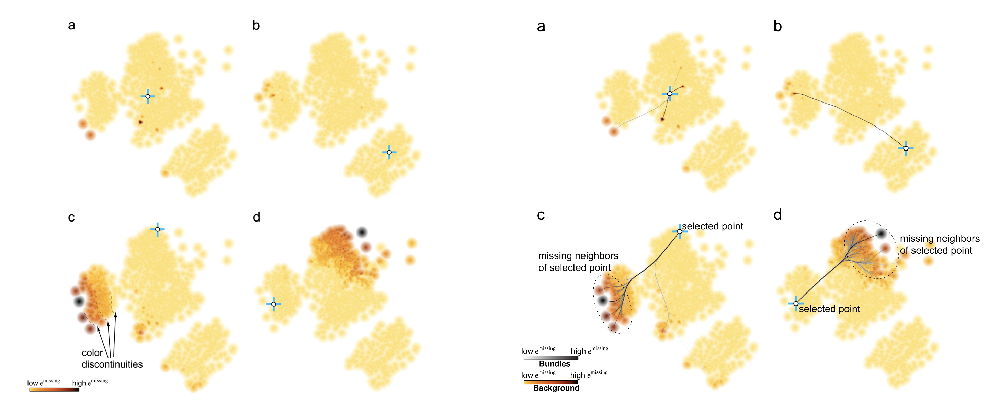
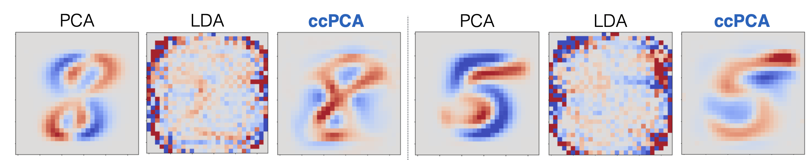

This website provides materials for the EuroVis 2025 tutorial on the reliable use of dimensionality reduction (DR) techniques in visual analytics. The tutorial investigates how to enhance the reliability of visual analytics with DR by focusing on two perspectives: quality evaluations and interpretation. The first half of the tutorial covers methods for evaluating the quality of DR projections, while the second half discusses techniques for interpreting and understanding the results. The tutorial also incorporates hands-on coding exercises to help participants apply the conccepts learned.
All tutorial materials, including slides and supplementary resources, will be made available here.
Part 1: Quality Assessment of Dimensionality Reduction
In this part, we first introduce dimensionality reduction techniques, such as PCA, MDS, t-SNE, and UMAP, for projecting high-dimensional data into low-dimensional spaces. We then detail distortion types in DR projections and present diverse quality metrics, along with approaches to visualize these metrics in projections. Finally, we highlight the ZADU Python library for evaluating and interpreting the reliability of dimensionality reduction projections.
Part 2: Interpretation of Dimensionality Reduction
We first present the fundamentals of interpreting dimensionality reduction results by distinguishing between linear DR (axis-level interpretation) and nonlinear DR (observed-pattern–level interpretation). We then detail methods for understanding observed patterns to explain clusters and structures in DR projections. Finally, we explore interpretations through gradient-based approaches and parametric nonlinear DR techniques, and conclude by highlighting existing libraries for practical implementation.